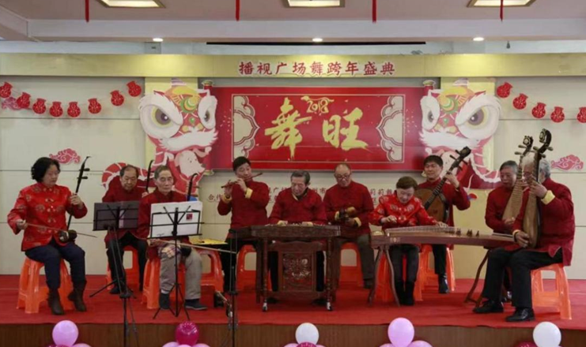
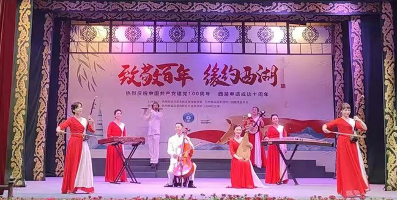
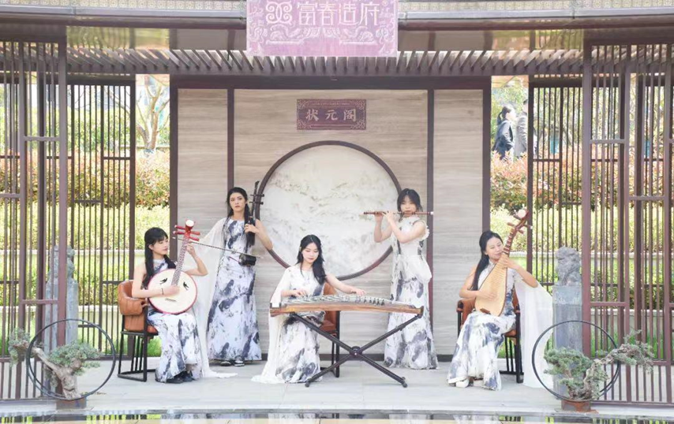

ETHNOMUSICOLOGY RESEARCH & AUDIO-VISUAL ARCHIVE
江南丝竹 · 记谱 · 传承 · 文旅 · 新声
Four Voices of
Jiangnan Sizhu
An interactive research archive exploring the transformative lineages of Jiangnan silk-and-bamboo music: from traditional Gongche notation (上尺工凡六五乙) and historic wedding rituals, to the venerable heterophony of the Golden Sun (金朝晖) folk ensemble, the standardized stagecraft of Huanglong Cave Neo-Yuefu (黄龙洞新乐府), and the modern commercial and scenic reinterpretations by the Heartbeat Girls Band (心动女子乐坊).

FOUR DISTINCT PERSPECTIVES
The Four Voices · 四种声音与实践
Select any voice below to navigate directly to its figure transcriptions, musical analysis, and audio-visual recordings.

Jiangnan Sizhu Music Notation
江南丝竹记谱法（上尺工凡六五乙）
Gongche notation (上尺工凡六五乙), staff, and numbered notations, plus 1997 Baoshan wedding performance.

Golden Sun Jiangnan Sizhu
金朝晖江南丝竹
Venerable community ensemble upholding traditional heterophony, decorated verse, and Six Ban suite.

Neo-Yuefu
黄龙洞新乐府
Professional standardized staging, Jasmine Flower ensemble score (Fig. 4.24), Huanle Ge, Da Yu, and Daojian Rumeng.

Heartbeat Girls Band
心动女子乐坊
Modern all-female ensemble performing scenic tourism repertoire, Huo Yuanjia, Tiangong Wuqu, and live staging.